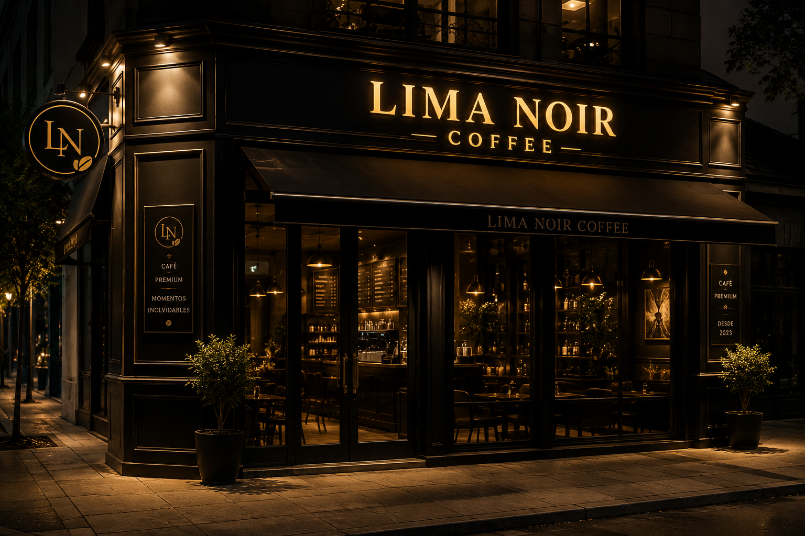
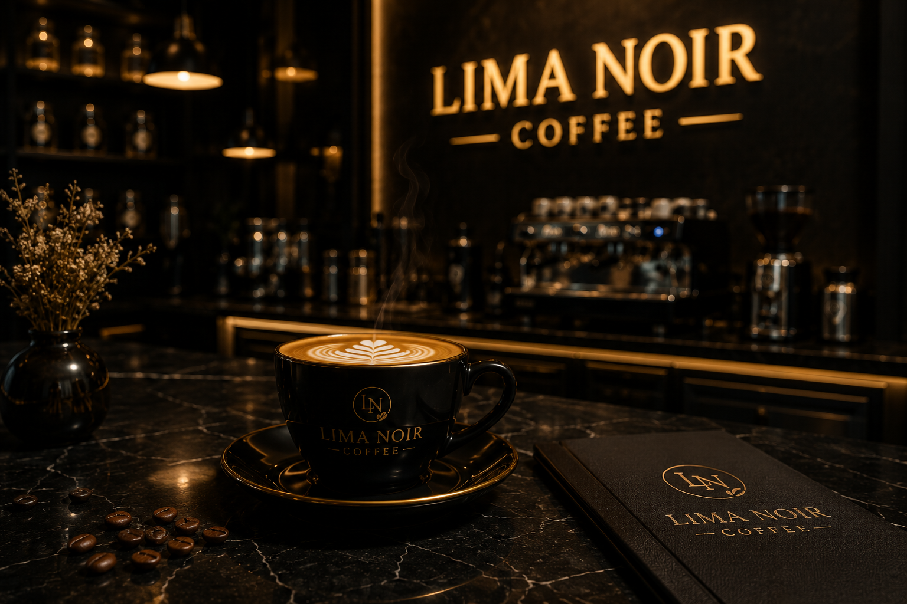
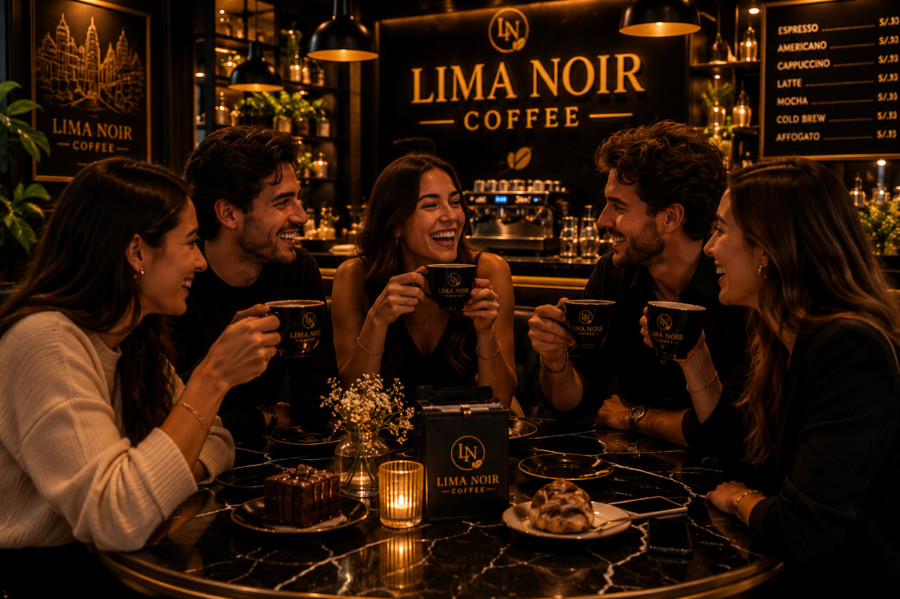

¿Quienes somos?
En Lima Noir Coffee creemos que el café es mucho más que una bebida; es una experiencia capaz de conectar personas, despertar emociones y crear momentos memorables. Nuestra cafetería nace con la visión de ofrecer un espacio elegante y moderno donde la calidad, el estilo y la pasión por el café se combinen en perfecta armonía. Inspirados en la esencia sofisticada del estilo noir y en la cultura cafetera, buscamos transmitir una identidad única en cada detalle, desde el ambiente hasta la presentación de cada taza.
Trabajamos con granos cuidadosamente seleccionados para garantizar aromas intensos, sabores equilibrados y una experiencia auténtica en cada preparación. Nuestro compromiso es brindar productos premium elaborados con dedicación y acompañados de una atención cercana y profesional. Además de nuestras bebidas, ofrecemos postres y acompañamientos diseñados para complementar perfectamente cada café.
Lima Noir Coffee es un espacio pensado para quienes disfrutan de la tranquilidad, las conversaciones especiales y los pequeños placeres del día. Queremos que cada visita se convierta en una experiencia diferente, donde el buen café, la elegancia y el confort se unan para crear un ambiente inolvidable para todos nuestros clientes.
Lima Noir Coffee nace con el propósito de transformar la experiencia tradicional del café en un momento único y sofisticado. Somos una cafetería inspirada en la elegancia, el diseño moderno y la pasión por ofrecer productos de alta calidad en un ambiente exclusivo y acogedor. Cada detalle de nuestro espacio ha sido pensado para transmitir comodidad, estilo y una atmósfera que invite a disfrutar cada instante. Nuestra prioridad es ofrecer cafés preparados con granos seleccionados cuidadosamente, resaltando aromas, sabores y texturas que reflejan la esencia de un café premium. Creemos que una buena taza de café puede convertirse en parte de los mejores momentos del día, por eso trabajamos constantemente para brindar una experiencia que combine calidad, presentación y excelente atención. En Lima Noir Coffee también buscamos crear un lugar ideal para compartir conversaciones, trabajar, relajarse o simplemente disfrutar del ambiente. Complementamos nuestras bebidas con postres y acompañamientos que realzan cada preparación y hacen de cada visita una experiencia más especial. Más que una cafetería, somos un espacio donde el café, la elegancia y la calidez se unen para ofrecer momentos memorables a cada persona que forma parte de nuestra historia.


